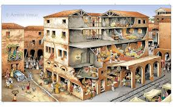
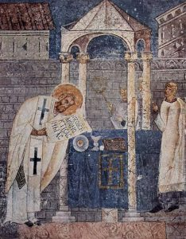
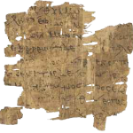

One
of the insights of the saints over the centuries is that when we pray in hymns,
we pray twice. We pray in both the lyrics and in the melody of the hymn. This is
a beautiful thought. It is so easy to do. We all love hymns and songs in
general.
One
of the insights of the saints over the centuries is that when we pray in hymns,
we pray twice. We pray in both the lyrics and in the melody of the hymn. This is
a beautiful thought. It is so easy to do. We all love hymns and songs in
general.
 I
was recently asked, “does
a native Western Buddhist Liturgy even need music?” “Absolutely!” I’ve
been ruminating since then, on the speed and fervency of my response. Since
the ancient Greeks, Western culture has used music to navigate the boundary
between the secular and the sacred. Music is one of the tools in our
sacred toolboxes. In the same way that a car mechanic couldn’t envision
working without screwdrivers, most Westerns would find it hard
to image religious practice without song. This Westerner is no exception.
I
was recently asked, “does
a native Western Buddhist Liturgy even need music?” “Absolutely!” I’ve
been ruminating since then, on the speed and fervency of my response. Since
the ancient Greeks, Western culture has used music to navigate the boundary
between the secular and the sacred. Music is one of the tools in our
sacred toolboxes. In the same way that a car mechanic couldn’t envision
working without screwdrivers, most Westerns would find it hard
to image religious practice without song. This Westerner is no exception.
While in Taiwan, one of my goals has been to develop a framework practitioners can use to create new liturgical content. By necessity, this framework must examine the marriage of sacred text and music. This topic is central! It is also incredibly complicated. Soon enough I will be detailing the specifics of several related concepts: prosody, text-underlay, text-setting, text-declamation and poetics, but first, a bigger questions needs addressed.
In religious
settings, why do we join text and voice?
Why do we sing?
“He Who Sings Well, Prays Twice.”
This aphorism, pseudonymously attributed to St. Augustine and included in the Catechism of the Catholic Church, asserts that prayer is made more efficacious when combined with song. If sung “well” (with sincerity and love), the words of a practitioner’s prayer and the music they sing each simultaneously constitute acts of worship. In fact, they form a gestalt expression of devotion, the whole becoming greater than the sum of its parts. This merger is so effective that the “… combination of sacred music and words, … forms a necessary or integral part of solemn liturgy.” Catholics don’t own this conception of sacred song. Forms and functions vary, but sacred song is central to the ceremonies of most religious traditions.
In a series of posts, I will examine the spiritual and functional benefits attributed sacred song. This post will examine music in the Christian church from it’s earliest gathering through the life of St. Augustine of Hippo (c. 40 CE-430 CE). In subsequent posts I will discuss Martin Luther’s musical obsession, and then branch out into other sacred musical traditions. Please don’t expect these posts to appear sequentially!
By combining the
heart and mind (ie. song and text), prayer is made more efficacious.
A. The Earliest Christian Gatherings
Note: Valeriy A. Alikin’s brilliant book “The Early History of the Christian Gathering,” helped me clarify this period in church history, and got me thinking about these issues. I can’t recommend his study highly enough.
For most of the last century, historians had presumed that early Christians modeled their gathering on contemporaneous Jewish synagogue services. Though this was an understandable assumption, there is scant evidentiary support. Instead, Alikin and others suggest that “in shape and function, the gatherings of Christian communities had much in common with those of voluntary associations, mystery cults and religious societies in the Graeco-Roman world (p. 17).” It should be remembered that many people during the 1st century CE (pagans, Jews, and Jewish Christians) were highly hellenized (had adopted Greek culture). As a result, many throughout the Roman empire formed and participated in voluntary associations.
Voluntary associations meet for a variety of reasons: to venerate specific gods, to make/maintain mutual burial agreements, to fight fires, or to engage in any number of shared interests. Assembling periodically (weekly, monthly, or yearly), meetings typically had two segments: a group meal consisting of food & wine, and a symposium. The symposium portion of the evening would include some or all of the following: religious rituals, prayers, libations, instruction, debate and dialogue, poetry, music, various other forms of “diversion,” and more drinking.

Insula, a multi-family apartment building.
In the church’s first century, meetings were often very small and held in the house or apartment of a member. Archeology has shown that houses could typically accommodate between 9 and 11 attendees. Acts 20 describes what must have been a typical house church. In this passage, Paul has preached late into the night to a congregation meeting in a 3rd story apartment. Eutychus, a young man sitting on a window sill, becoming overwhelmed with sleep, falls to his death. Typically, a working class peasant would have lived in a multi-family structure, or insula, while wealthier families resided in one story mansions called domus (Aliken p. 51). When either an apostle or an itinerate preacher was not present, the host would assume, or assign to another, the leadership role.
There was a variety of sacred songs at these gatherings and a variety of reasons they were employed. The author of Ephesians explains.
“Do not get drunk with wine, for that is debauchery; but be filled with the Spirit, as you sing psalms and hymns and spiritual songs among yourselves, singing and making melody to the Lord in your hearts, giving thanks to God the Father at all times and for everything in the name of our Lord Jesus Christ.“
~ attrib. Apostle Paul, Ephesians 5.18-20 (NRSV)
Practitioners sang to show their heartfelt gratitude to God the Father and the Lord Jesus Christ. The letter to the Ephesians also suggests a functional benefit. Water mixed with varying amounts of wine was a staple element in both pagan and Christian assemblies, and accidental/purposeful drunkenness would sometimes occur. Tertullian (c. 155-240 CE) suggested the following solution:
“After the bringing in of water for washing the hands, and lights, each is invited to sing publicly to God as he is able from his knowledge of Holy Scripture or from his own mind; thus it can be tested how he has drunk.”
~ Tertullian, The Apology 39.18
Sacred songs allowed Christians to express gratitude to God the Father and Jesus Christ, it kept their mouths from excessive drink, and demonstrated their sobriety
B. Psalms, Hymns & Spiritual Songs
“… with gratitude in your hearts sing psalms, hymns, and spiritual songs to God.”
~ attrib. Apostle Paul, Colossians 3.16 (NRSV)
The author(s) of these parallel passages (Colossians 3.16 & Ephesians 5.18-20), mention the singing of psalms, hymns and spiritual songs. In these early years, it is unclear if there was a substantive difference between hymns, psalms (probably not Davidic Psalms [1]) and spiritual songs. However, it is possible to differentiate between two types of vocal music: songs composed by members of the congregation and textless vocalizations uttered under the influence of the holy spirit.
Hymns
 The
first few hundred years of church history was a period of intensive
innovation: texts were authored, doctrines debated, leadership structures
established, heresies were identified and rooted out, and rituals were
formalized. The same was true in the musical sphere as
Christianity attempted to define itself. The imperial magistrate Pliny
the Younger reported the following to Emperor
Trajan: “they [Christians] gather
and sing hymns to Christ as to a god.” For better or
worse, singing songs to a humiliated and crucified criminal “as
one would unto a god,” would define Christians internally and
externally.
The
first few hundred years of church history was a period of intensive
innovation: texts were authored, doctrines debated, leadership structures
established, heresies were identified and rooted out, and rituals were
formalized. The same was true in the musical sphere as
Christianity attempted to define itself. The imperial magistrate Pliny
the Younger reported the following to Emperor
Trajan: “they [Christians] gather
and sing hymns to Christ as to a god.” For better or
worse, singing songs to a humiliated and crucified criminal “as
one would unto a god,” would define Christians internally and
externally.
At this time, a congregation couldn’t pull out their hymn books when it was time to worship. Members had to create new songs, in advance or on the spot, sharing them with the congregation. Undoubtedly, successful compositions were adopted and refined by each group, leading to a significant amount of local variation.
Tertullian recounts that each sang “publicly to God as he … [was] able from his knowledge of Holy Scripture or from his own mind.” It should be understood that Holy scriptures did not mean the Christian New Testament. This is important! Most early congregations had few if any New Testament texts (eg. gospels, letters, apocolysises and other literary works) [1b]. As such, many congregations followed and passed on, traditions they had received orally[2]. Regardless of knowledge and/or inspiration, these songs represented personal expressions of devotion and reflected each group’s unique conception of the divine [2b].
Singing in the Spirit
In discussing orderly worship, Paul suggests that spiritual gifts should be used in turn (ie. not simultaneously), to edify the whole congregation. Apparently, in attempting to show their spiritual bona fides, some were treating meetings as competitions.
“What should be done then, my friends? When you come together, each one has a hymn, a lesson, a revelation, a tongue, or an interpretation. Let all things be done for building up.” … “So, my friends, be eager to prophesy, and do not forbid speaking in tongues; but all things should be done decently and in order. ~ Apostle Paul, 1st Corinthians 14.26 & 39-40 (NRSV)
 Paul’s
concern was not with the gifts
of the spirit, which he desired all receive, but in their use
for self-edification only. Aliken states that “Paul distinguishes between singing
praise with the spirit, that is, in a trance, and
singing praise with the
mind, that is, in
intelligible words.” In the context of an admonition against the
unrestrained use of spiritual gifts (1st Corinthians 14), the
hymns mentioned in verse 26 were
most likely spontaneous musical utterances (Aliken 2010, p. 216). Using glossolalia (speaking
in tongues) as an example, Paul
explains the disadvantages of unintelligible sound.
Paul’s
concern was not with the gifts
of the spirit, which he desired all receive, but in their use
for self-edification only. Aliken states that “Paul distinguishes between singing
praise with the spirit, that is, in a trance, and
singing praise with the
mind, that is, in
intelligible words.” In the context of an admonition against the
unrestrained use of spiritual gifts (1st Corinthians 14), the
hymns mentioned in verse 26 were
most likely spontaneous musical utterances (Aliken 2010, p. 216). Using glossolalia (speaking
in tongues) as an example, Paul
explains the disadvantages of unintelligible sound.
“There are doubtless many different kinds of sounds in the world, and nothing is without sound. If then I do not know the meaning of a sound, I will be a foreigner to the speaker and the speaker a foreigner to me. So with yourselves; since you are eager for spiritual gifts, strive to excel in them for building up the church.”“… in church I would rather speak five words with my mind, in order to instruct others also, than ten thousand words in a tongue. [2c]“
~ Apostle Paul, 1st Corinthians 14.10-12 & 19 (NRSV)
I would like to suggest that in these contexts, tests for sobriety might have made a lot of sense. “Wow, is he prophesying?” “Nah, he’s just had too much wine.”
Spirit inspired songs did not immediately disappear, as evidenced by St. Augustines Expositions (Sermons) on Psalm 65 [3] (c. 392 – 418 CE). Despite this, it is hard to imagine how such utterances functioned in the context of 4th- to 5th-century church services.
“The pastures of the wilderness overflow, the hills gird themselves with joy, the meadows clothe themselves with flocks, the valleys deck themselves with grain, they [who gather this abundance] shout and sing (jubilare) together for joy.“
~ Psalm 65.12-13 (NRSV)“… between the song which they express in words, they insert certain sounds without words bursts forth in a certain voice of exultation without words because filled with too much joy, he cannot explain in words what it is in which he delights.”
~ St. Augustine of Hippo, Enarrationes in Psalmos, Psalmum 66 (65)
 While
discussing “singing in the spirit,” St. Augustine uses the latin verb jubilare. Jubilare at
this time would suggested the “songs of
farm workers, who, as they were harvesting, employed a repetitive rhythmic
chant presumably to facilitate their labour (McKinnon, New Grove).” In
the context of this sermon, he was most likely not referring to work songs.
For St. Augustine, one who jubilates sings to the Lord from a place of
unrestrained joy [3b].
While
discussing “singing in the spirit,” St. Augustine uses the latin verb jubilare. Jubilare at
this time would suggested the “songs of
farm workers, who, as they were harvesting, employed a repetitive rhythmic
chant presumably to facilitate their labour (McKinnon, New Grove).” In
the context of this sermon, he was most likely not referring to work songs.
For St. Augustine, one who jubilates sings to the Lord from a place of
unrestrained joy [3b].
St. Augustine’s Baptism [4]
One more example! It is said that at his baptism, the Holy Spirit came simultaneously upon both St. Augustine and St. Ambrose. Under this influence they sang extemporaneously, and in unison, what would thence forth be called the Te Deum [5].
“[at] the springs called St. John’s, Augustine was finally baptized. … And at these springs the Holy Spirit granted them [Augustine & Ambrose] eloquence and inspiration; and so, with all who were there hearing and seeing and marveling, they sang together the Te Deum Laudamus, and so brought forth what is now approved of by the whole church, and sung devoutly everywhere.”
~ Landulf of Milan (1050 – 1110 CE), History of the Bishopric of Milan
This period of individual and charismatic expression wouldn’t last forever, especially as congregations outgrew the homes of members. However, while it lasted it must have been both tremendously exciting and intensely chaotic.
Psalms, hymns and spiritual songs were a means of individual devotional expression, and an outlet for voicing gratitude and joy!
C. Pagan & Christian: Not So Different?
Christians were quick to draw contrasts between their spiritual songs and the songs of pagans groups. As the church father Clement of Alexandria (c. 150-215 CE) points out:
“… in their banquets over the brimming cups, a song was sung called a skolion, after the manner of the Hebrew Psalms, all together raising the paean, with the voice, and sometimes also taking turns in the song while they drank healths round; while those that were more musical than the rest sang to the lyre. But let amatory songs be banished far away, and let our songs be hymns to God.”
~ Clement of Alexandria, Paedagogus (The Instructor). 2.44.3-4
There are a few interesting terms embedded this quote: skolions are drinking songs used to extol the virtues of a god or hero, a paean is a song of praise (here a synonym of skolion), and amatory refers to a song or poem expressing feelings of love and/or lust.
For Clement, Christian sacred songs were for praising the qualities of the one true God. Broadly speaking, the early Christian writers thought that God the Father and Jesus Christ were real, but the gods of the Graeco-Roman pantheon were fictitious. The Christian God was righteous and virtuous, well the pagan gods, though powerful, had all the faults, vices, and foibles of human beings. As a result of these convictions, Christians were routinely called “atheists” (without the gods).
“So we are called atheists. Well we do indeed proclaim ourselves atheists in respect to those whom you call gods, but not in regard to the Most True God, the Father of righteousness and temperance and the other virtues, who is without admixture of evil. On the contrary, we reverence and worship Him and the Son who came forth from Him and taught us these things …”
~ Justin Martyr, First Apology (c. 155 – 157 CE)
For me, a distinction on these grounds is not entirely satisfying. Christians sang hymns in praise of “God,” while pagans sang hymns in praise of “the gods.” It is only the nature and inclinations of the divine beings that differ. It would be very wrong to assume pagan sacred songs were not also a form of genuine religious devotion. In Graeco-Roman culture, it was considered a civic duty to offer praises and make sacrifices to the gods and the emperor. Indeed, proper cultus deorum (care of the gods) was every citizen’s responsibility. It ensured that harvests were plentiful, armies won battles, natural disasters were averted and emperors remained healthy. Christians were not persecuted for worshiping Christ, but for refusing to fulfill their civic responsibilities. As such, when calamities struck the empire, the Christians (the atheists), often became scapegoats.
“If the Tiber overflows into the city, if the Nile does not flow into the countryside, if the heavens remain unmoved, if the earth quakes, if there is famine or pestilence, at once the cry goes up: to the lions with the Christians!”
~ Tertullian, The Apology 40.2
In practical terms, this conflict is between an orthodoxic and an orthopraxic view of religion. Christians sang of their belief in a very real and present God. Pagans did not necessarily believe in the literal existence of the gods but venerated them because it was the proper way to behave.
In writing about the Christians’ predicament, the Greek philosopher Celsus (c. 25 BCE – 50 CE) proffered the following solution:
“… if any one commands you to celebrate the sun, or to sing a joyful triumphal song in praise of Minerva, you will by celebrating their praises seem to render the higher praise to God; for piety, in extending to all things, becomes more perfect. Men seem to do the greater honor to the great God when we sing hymns in honor of the sun and Minerva.”
~ Celsus, Celsus Quoted by Origen 8.66
Christians, by participating in mandated venerations, could show respect for the emperor and the gods. Additionally, since their “great God” was in all, offerings to the Roman gods would vicariously honor the Christian God. As an added benefit, when done with sincerity, this worship would allow the devout Christian to perfect their piety [6].
St. Augustine also believed in music’s power to fan the “ardent flame of piety.” He does though caution against focusing too closely music’s beauty.
“…when they are sung, these sacred words stir my mind to greater religious fervor and kindle in me a more ardent flame of piety than they would if they were not sung…”
“But I ought not to allow my mind to be paralyzed by the gratification of my senses, which often leads it astray. For the senses are not content to take second place.”
~ St. Augustine, Confessions Book 10.33 (397-400 CE)
For Christians and pagans alike, sacred song allowed worshipers to extoll the virtues of the divine. Additionally, both saw it was a way to increase piety and deepen devotion.
However, pagans saw sacred music as part of civic their responsibilities, while Christians saw it as a way to proclaim their separation from this World. For the Christians, their true civic loyalty lay with Christ’s future kingdom.
D. A Shelter from the Storm
Christians didn’t follow Celsus’s advise, but they did find other ways to weather periods of persecution. En route to meet his death in the Roman colosseum, Ignatius the bishop of Antioch (c. 35-108 CE) wrote the following to the church at Ephesus.
“Therefore, in your concord and harmonious love, Jesus Christ is sung. And do ye, man by man, become a choir, that being harmonious in love, and taking up the song of God in unison, ye may with one voice sing to the Father through Jesus Christ, so that He may both hear you, and perceive by your works that ye are indeed the members of His Son. It is profitable, therefore, that you should live in an unblameable unity, that thus ye may always enjoy communion with God.”
~ Ignatius, Epistle to the Ephesians 4

Ignatius describes choral singing as a way to built harmony and love within the congregation. The implication is that during times of trouble, unity is critical. Similarly, when the Church at Milan was being threatened by the Arian backing empress Justina, singing hymns provided comfort and strength to the congregation.
“It was not long before this that the Church at Milan had begun to seek comfort and spiritual strength in the practice of singing hymns, in which the faithful fervently united with heart and voice… We sing God’s praise with living psaltery, for more pleasant to God than any instrument is the harmony of the whole Christian people.”
~ St. Augustine, Confessions Book 7.15 (385-386 CE)
St. Syncletica of Alexandria (c. 270 – 350) was born to a wealthy family, but chose to live as a strict ascetic. Because of her virtuous reputation, many women were drawn to follow her example. This monastic community was referred to as the desert mothers. So highly was she esteemed that some of her sayings were preserved in the writings of the desert fathers.
“There is grief that is useful, and there is grief that is destructive. The first sort consists in weeping over one’s own faults and weeping over the weakness of one’ s neighbors, in order not to destroy one’ s purpose, and attach oneself to the perfect good. But there is also a grief that comes from the enemy, full of mockery, which some call accidie [despondency]. This spirit must be cast out, mainly by prayer and psalmody.”
~ St. Syncletica, Apophthegmata patrum

Syncletica distinguishes between grief which is useful (self-reflective shame), and grief that is destructive (despondency). Despondency must be fault through prayer and the singing of the Psalms.
Sacred song help
the devout banish grief.
They are also a way build strength and unity within
the community, supporting members in troubled times.
E. Heresy, Orthodoxy & the Psalms of David
I’m sorely tempted to dig deeply into theological debates, persecutions, apologies, edicts, and anti-semitism, but I just can’t. Suffice it to say, a lot of amazing and horrify things were done, written and said before the Edict of Thessalonica (380 CE) made Nicene Christianity (proto-orthodox Christianity) the state religion of the Roman Empire.
So what can be said? Local creativity and individual innovation, the lack of an authoritative canon of scripture, and the absence of centralized power structures lead to a plethora of theological prospectives, regional variations, ritual practices, and musics. Ultimately, many of these variations were branded as “heresy” by the proto-orthodox Church.
One alternative musical tradition was a book of “new psalms” composed by Valentinus for his teacher Marcion. The gnostic Valentinus and the dualist Marcion were favorite targets of proto-orthodox heresiologist (heresy hunters), so their “new psalms” got a lot of “negative press”. One advantage of using the Davidic Psalms, as opposed to lyrics by the “renegade” Valentinus, was that their textual orthodoxy was beyond question [6b].
By the time Tertullian pens De Carne Christi (c. 203-206), the singing of David’s Psalms had become much more common.
“[dismiss] … those psalms of Valentinus which with supreme impudence he interpolates as though they were the work of some competent author.”
“We, moreover, shall have in this connexion the support of the Psalms, not indeed those of that apostate and heretic and Platonic Valentinus, but of the most holy and canonical prophet David.”
~ Tertullian, De Carne Christi (the Flesh of Christ), 17 & 20.4
In another striking story, new hymns by the gnostic leader Bardaiṣan we proving so popular that, “their words and melodies lived for generations on the lips of the people.” In an attempt to counteract this influence, the proto-orthodox preacher St. Ephram the Syriac “composed hymns… to the same tunes as the psalms of Bardeṣanes, [which] gradually lost favor.” ~ Arendzen, J. Catholic Encyclopedia (1913)
(sung to the melody of “The infants have been killed.”)
Stanza 2B
“Because Marcion added falsehood,
The church has removed him and cast him out,
Valentinus, because he deceived…
Bardaiṣan ornamented his falsehood…
May the good one in his mercy turn them,
From wandering into his pasture!”
~ St. Ephrem the Syriac, Hymns Against Heresies 22.2b

Going a step further, some found it necessary to prohibit all sacred songs not directly derived from the Hebrew Psalms. Canon LIX (rule 59) of the Council of Laodicea (363-364) stated that: “No psalms composed by private individuals nor any uncanonical books may be read in the church, but only the Canonical Books of the Old and New Testaments.”
Sacred song can be used to threaten orthodoxy, ensure orthodoxy and fight heresy… depending on your point of view.
F. Expositions on the Psalms
By the late 4th century, Davidic Psalms had become, according to St. John Chrysostom (c. 349-407 CE), the “first, middle, and last.” The Psalms of David still make up the core of the Eastern Orthodox liturgy and some Protestant traditions.
“In church when vigils are observed David is first, middle, and last. At the singing of the morning canticles David is first, middle, and last. At funerals and burials of the dead again David is first, middle, and last. O wondrous thing! Many who have no knowledge of letters at all nonetheless know all of David and can recite him from beginning to end. And not only in the cities and the churches, in all seasons and for ages past, has David illuminated all our lives, but also in the fields and in the wilderness.”
~ St. John Chrysotom quoted by Martin Gerbert in De cantu et musica sacra I, 64 (1774 CE)
Psalms had also become a common component of monastic life.
“In the cottage of Christ all is simple and rustic: and except for the chanting of psalms there is complete silence. Wherever one turns the laborer at his plow sings Alleluia, the toiling mower cheers himself with psalms, and the vine-dresser while he prunes his vine sings one of the songs of David. These are the songs of the country; these, in popular phrase, its love ditties: these the shepherd whistles; these the tiller uses to aid his toil.”
~ St. Jerome, Epistle 46.12 (386 CE)

In the final decades of the 4th century, it seems as if every Church Fathers preached on the Psalms, often approaching this task with encyclopedic thoroughness [7]. St. Augustine, for instance, managed to expound on each Psalm (1-150), preaching on most multiple times.

Basil
of Caesarea: Homily on Psalm 1
As a wrap-up, I would like to feature a sermon from the 4th-century thinker, Basil of Caesarea. In this exposition, the number of benefits attributed to the singing of Psalms is staggering.
“For when the Holy Spirit saw that mankind was ill-incline toward virtue and that we were heedless of the righteous life because of our inclination to please, what did he do? He blended the delight of melody with doctrine in order that through the pleasantness and softness of the sound we might unawares receive what was useful in the words, according to the practice of wise physicians who, when they give the more bitter draughts to the sick and often smear the rim of cup with honey.
Songs help with the digestion of difficult and uncomfortable truths. This is similar to the Mary Poppins school of theology.
“… for it softens the wrath of the soul, and what is unbridled it chastens. A psalm forms friendships, unites those separated, conciliates those at enmity. Who, indeed, can still consider him an enemy with whom he has uttered the same prayer to God? So that psalmody, bringing about choral singing, a bond, as it were, toward unity, and joining the people into a harmonious union of one choir, produces also the greatest of blessings, charity. A psalm is a city of refuge from the demons; a means of inducing help from the angels, a weapon in fears by night, a rest from toils by day, a safeguard for infants, an adornment for those at the height of their vigor, a consolation for the elders, a most fitting ornament for women.”
A very long list indeed! Sacred song eases anger, unites enemies and binds congregations, producing blessings and charity. Further, sacred song provides refuge against the forces of evil, induces the angels to assist the faithful, calms night terrors, supplies mental rest after a long day, gives strength to those who labor, consoles the elderly and adorns women. The last line is particularly interesting as women were prohibited from speaking in the Church.
“Oh! the wise invention of the teacher who contrived that while we were singing we should at the same time learn something useful; by this means, too, the teachings are in a certain way impressed more deeply on our minds. Even a forceful lesson does not always endure, but what enters the mind with joy and pleasure somehow becomes more firmly impressed upon it.”
Music allows us to learn and sing at the same time, and what is learned will be impressed more deeply into our minds and hearts. So… “He who sings well, learns twice!”
G. Final Thoughts

King David, portrayed as Orpheus, tames a wild beast.
When you look at something new, something that has just been born, it’s possibilities seem endless. For early Christians, very little was mandated and even less was fixed. Congregations were islands unto themselves and within each, individual members could make strong and innovative contributions. These new converts borrowed customs adapting them to their needs, but where necessary created new practices “whole cloth.” From these initial seeds grew all the variations in theology, ritual, scriptures, liturgies and musics of the 2nd century. However, external and internal pressures would eventually force these diverse Christian movements to compete for dominance. By in large, those groups that wouldn’t or couldn’t adapt didn’t survive. Thankfully some of their traditions, philosophies, and writings remain.
Sacred music played an important role in this evolutionary process. What started as a forum for individual creativity and devotion, eventually lead to a focus on tribal identity and textual orthodoxy. Regardless, for early churches, music brought unity, provided shelter during hard times, and offered succor. Music deepen devotion and piety, helping Christians express their joy and gratitude to God. It inspired vigor in the lazy, strength in the feeble, courage in the fearful, and understanding the lost. Lastly, music help Christians define themselves, to themselves and to others.
For the Church, music became the “first, middle, and last.”
Notes:
1. I’d always assumed that “psalms” referred to Davidic Psalms; however, in these passages (Colossians 3.16 & Ephesians 5.18-20) “psalms” most probably meant any religious song. During the first century, synagogue services did not include music. By contrast, temple worship made extensive use of music. Synagogue services were times of prayer, instruction, and Torah reading. Davidic Psalms did not begin to be sung in synagogues services until 600+ years after the destruction of the second temple (70 CE). It simply doesn’t plausible that 1st-century Christians adopted the practice of singing the Psalms of David from the Jews.
Additionally, the Greek word psalmos can be defined as a “voice combined with lyre/harp/kithara.” Since songs with lyre accompaniment were common at symposiums, it becomes hard to argue that psalms in this context could only mean the Psalms of David.
“Plutarch also describes how singing at a symposium took place. First of all, the guests sang the god’s or the gods’ song together, all raising their voice in unison. Subsequently, the lyre was passed around and the guest who could play the instrument would take it, tune it and sing.”
~ Aliken 2010, p. 212
Here is an example of Christian songs written in this period were the term psalms does not refer to Davidic Psalms. In the Odes of Solomon, the author of Ode 16 views the composition of psalms as his “work.”

Papyrus fragment
As the work of the plowman is the plowshare,
And the work of the helmsman is the steering of the ship,
So my work is the psalm of the Lord in His praises.In His praises are my art and my service,
Because His love has nourished my heart,
And His fruits He poured unto my lips.For my love is the Lord;
Hence I shall sing to Him.
1b. Paul
and some of the Gospel writers must have had access to the Septuagint,
a Greek translation of the Hebrew Bible. Church Fathers from the 2nd – 4th
century certainly had the Septuagint. Unsurprisingly, Jewish leaders hated
how Christians used the Septuagint to defend Christian theology (ie. apologia).
In 128 CE a Turkish-born Greek, Aquila of Sinope, was appointed by Emperor Hadrian to assist in the rebuilding of Jerusalem. During this period Aquila converted to Judaism and under the supervision of his teacher Rabbi Akiba, retranslated the Hebrew Bible into Greek. Most Christian scholars of the time were incensed, accusing Aquila of an anti-Christian bias.
Here is an example of what got some people so upset. The Septuagint version of Isaiah 7:14 says that a “virgin will conceive.” New retranslations indicate that a “young woman will conceive.” Since Isaiah 7:14 is cited in the Gospel of Matthew (1:23) as a prediction of the virgin birth, a retranslation that removes “virgin” is a declaration of war.
In the following quote, Justin Martyr takes the possibly fictitious Rabbi Trypho to task over these retranslations. As justification, he points to the apocryphal tale that the Septuagint (literally the word 70), had 70+ translators.
“But I am far from putting reliance in your teachers, who refuse to admit that the interpretation made by the seventy elders who were with Ptolemy [king] of the Egyptians is a correct one; and they attempt to frame another. And I wish you to observe, that they have altogether taken away many Scriptures from the translations effected by those seventy elders who were with Ptolemy, and by which this very man who was crucified is proved to have been set forth expressly as God, and man, and as being crucified, and as dying.
~ Justin Martyr, Dialogue with Trypho (c. 165 CE)
The King James version of the Bible used the Septuagint as it’s source material. Aquilla’s translation, on the other hand, played an important role in the development of the Masoretic (c. 600-900 CE). For Rabbinic Judaism, the Masoretic is the authoritative version of the Hebrew Bible, containing the texts in the original Hebrew and Aramaic and translations in Greek and Syriac.
2. Paul’s epistles to the Galatians, Thessalonians, and Corinthians were written before the first gospel (Mark), and Paul did not seem to have had access to significant amounts of biographic information concerning Jesus. Indeed, Paul’s letters suggest that he had almost no knowledge of Christ ministry, instead concentrating on this death and resurrection. In the following passage, Paul reminds the Corinthian church of an oral tradition he had received and passed to them.
“For I handed on to you as of first importance what I in turn had received: that Christ died for our sins in accordance with the scriptures, and that he was buried, and that he was raised on the third day in accordance with the scriptures, and that he appeared to Cephas, then to the twelve. Then he appeared to more than five hundred brothers and sisters at one time, most of whom are still alive, though some have died. Then he appeared to James, then to all the apostles. Last of all, as to one untimely born, he appeared also to me.”
~ Apostle Paul, 1 Corinthians 15.3–8, (NRSV)
2b. Some early songs are contained in a collection called the Odes of Solomon (c. 3rd-4th century). In the following example, the songwriter describes God/Christ as Light and Truth, which suggests a gnostic Christology (view of Christ).
“I went up into the light of Truth as into a chariot,
And Truth led me and allowed me to proceed.And He allowed me to pass over chasms and gulfs.
And He saved me from cliffs and valleys.And He became for me a haven of salvation.
And He set me on the placed of immortal life.And He went with me and allowed me to rest and did not allow me to err,
Because He was and is the Truth.”
~ Odes of Solomon, Ode 38.1-4

{kind=link}
{kind=link}
{kind=link}
{kind=link}
{kind=link}
{kind=link}
{kind=link}
{kind=link}
{kind=link}
{kind=link}
2c. This is one of the rationales periodically used to bar instruments from the church. Instrumental sounds cannot communicate spirituals truths (words), so they have no place in the Church.
3. The
Psalm being discussed in St. Augustine’s Exposition on Psalm 66 is generally
now labeled as Psalm 65. This is the same as the Hebrew numbering of Psalms.
This presents me with some confusion as the Latin Vulgate and Greek
Septuagint number this Psalm 64. Based on his letters to St. Jerome, we know
that St. Augustine was using the Greek Septuagint… so I’m at a bit of a
loss. Shouldn’t this be the exposition on Psalm 64?
3b. Augustine’s
interpretation seems to reflect the original Hebrew text. In the context of
Hebrew version of Psalm 65, the word ruwa implies a
sustained (as opposed to singular), shout for joy.
It most definitely does not suggest a work song.
4. If you
look closely at the painting by Benozzo
Gozzoli (c. 1463–5) you can see the first line of the Te
Deum painted on the rear wall.

“Writing on the Wall”
5. Some have attributed the Te Deum to Saint Nicetas Dardani (c. 335–414), the Bishop of Remesiana and a respected composer of liturgical song. While this is a more plausible explanation, there is little evidential support.
6. Origen
is unconvinced by Celsus’s argument. The Sun is “real” and a creation of
God… so fine, but Minerva (the
daughter of Jupiter) is a fable… so no way. Origen: “…
if we admit Minerva the daughter of Jupiter, we must also admit many fables
and fictions which can be allowed by no one who discards fables and seeks
after truth.”
~ Origen, Origen Versus Celsus, 4959
I wonder if it was Celsus’s intention to be taken literally or if the Sun and Minerva were only being used as hypothetical examples.
6b. Scholars
agree that at least some of the 150 Psalms can be attributed to David.
However, many Psalms seem to have been written during the Babylonian exile.
Regardless, many believed (and still believe) that all of the Psalms were
penned by David.
“As regards those which have no inscription, we must also inquire to whom we ought to ascribe them. For why is it that even the simplest inscription is wanting in them–such as the one which runs thus, “A psalm of David,” or “Of David,” without any addition? Now, my idea is, that wherever this inscription occurs alone, what is written is neither a psalm nor a song, but some sort of utterance under guidance of the Holy Spirit, recorded for the behoof of him who is able to understand it. But the opinion of a certain Hebrew on these last matters has reached me, who held that, when there were many without any inscription, but preceded by one with the inscription “Of David,” all these should be reckoned also to be by David. And if this be the case, it follows that those without any inscription are by those (writers) who are rightly reckoned, according to the titles, to be the authors of the psalms preceding these.”
~ Hippolytus of Rome
{kind=link}
In this “tortured” argument (too
soon?), Hippolytus suggests that if one or more Psalms is missing an
inscription, they should all attributed to the last listed author. Even if
this is not true, he argues, it should be remembered that all Psalms
were inspired by the same muse, the Holy Spirit.
7. In the
last few decades of the fourth century, Christian thinkers spent a
tremendous amount of energy expounding on the Psalms of David.
Here is a cursory list:
| Author | Type of Work | Date |
|---|---|---|
| Athanasius | Letters | 370 |
| Jerome | Prefaces | 386 & 392 |
| Jerome | Tractates | 389 – 391 |
| Jerome | Commentaries | 389 – 391 |
| Ambrose | Expositions | late career to death 397 |
| John Chrysostom | Expositions | 387-397 |
| Hilary | Commentaries | 365 |
| Eusebius | Commentaries | after 335 |
| Augustine | Expositions | 392 – 418 |
| Basil the Great | Expositions | |
| Theodore of Mopsuestia | Expositions | C. 380s |
| Ephrem the Syriac | Expositions | |
| Gregory of Nyssa | Treatise | C. 379 |
Reference Materials
- Alikin, Valeriy A., The Earliest History of the Christian Gathering: Origin, Development and Content of the Christian Gathering in the First to Third Centuries, Brill Publishing, 2010
- Arendzen, John, FR., entry on Bardaisan, The Catholic Encyclopedia, Robert Appleton Company
- Ehrman, Bart. D., From
Jesus to Constantine: A History of Early Christianity, The Great
Courses
http://www.thegreatcourses.com/courses/from-jesus-to-constantine-a-history-of-early-christianity.html - Ehrman, Bart D., New
Testament, The Great Courses
http://www.thegreatcourses.com/courses/new-testament.html - Kahlo’s, Maijastina. Debate and Dialogue: Christian and again Cultures c. 360-430, Ashgate e-Book, 2007
- Kloppenborg, John S., & Wilson, Stephen G., Voluntary Associations in the Graeco-Roman World, Rutledge, 1996
- Marianne, Antti & Luomanen, Petri, A companion to Second-Century Christian “Heretics”, Brill, 2005
- McCollum, Andrew, C., Tran. Ephram, Against
Heresies: Hymn 22
https://archive.org/details/EphremSyrusHymnsAgainstHeresies22 - McKinnon, James W., Music in Early Christian Literature, Cambridge University Press, 1987
- Music, David, W., Hymnology: A Collection of Source Readings, The Scarecrow Press Inc., 1996
- Nichol, Aidan, O. P., Lost in Wonder: Essays on Liturgy and the Arts, Routledge, 2011
- Struck, Oliver W. & Treitler, Leo, Strunk’s Source Readings in Music History (Revised Edition), W. W. Norton Company Inc., 1998
- Weiss, Piero & Taruskin, Richard, Music in the Western World, Thomson Learning, Inc. 2008
Internet Resources
- Augustine, Exposition
on Psalm 66, Translated by J.E. Tweed
http://www.newadvent.org/fathers/1801066.htm - Catechism of the Catholic Church
http://www.vatican.va/archive/ccc_css/archive/catechism/p2s1c2a1.htm - Christian Classics Ethereal Library
http://www.ccel.org/ccel/schaff/anf04.vi.ix.viii.lxvi.html - Early Christian Writings
http://www.earlychristianwritings.com/ - The Deuteron-Pauline Letters
http://catholic-resources.org/Bible/Paul-Disputed.htm - Tertullian, Defense of the
Christians Against the Heathen, Translated by Alexander SOUTER
The Tertullian Project, http://www.tertullian.org/ - New Testament (New Revised Standard
Version)
https://www.biblegateway.com/
Have you come across anything in the Western tradition where people read English text together, similar to how the Chinese Buddhists chant Chinese Sutras? It would be useful to have some standard guidelines for how to chant English. It doesn’t have to be extremely musical, but I think it probably needs some guidelines so that everyone can be on the same page (literally) and the words are clear and understandable. Music in service to the Dharma. Also, in the spirit of this article, the overall experience should ideally be uplifting and inspiring–“praying twice.”
I wonder if there is twice the merit. =)
Perhaps doubling the merit is overly optimistic. There is a system of what are called psalm tones which might be adaptable after a fashion. They were used in a different context but might have some useful techniques to offer. There are also the techniques developed for sanskrit, pali, and prakrit chanting which might produce a little info. I will put the on my future posts list.
Thanks for the idea and keep them coming.
Stephen